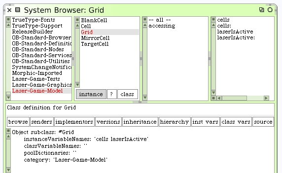
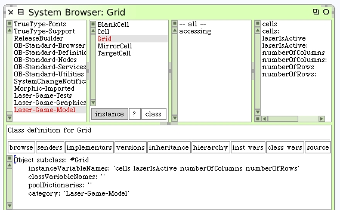

Grid
From what we've seen so far, the Grid is responsible for holding the cells in a matrix. It must have a provision to add specific cells to specific locations, and it should have a mechanism to address cells at specific locations. The Grid will activate the laser beam.
We will create 2 instance variables, "cells" and "laserIsActive". Create accessors for both. The instance variable "cells" will contain a dictionary where the keys are points of location within the Grid and the values are the cells. The instance variable "laserIsActive" is a boolean indicating state of the laser beam.
Add 2 more instance variables to simplify things in later operations: "numberOfColumns" and "numberOfRows". Write accessors for these too. We'll deal with initialization in a moment.
